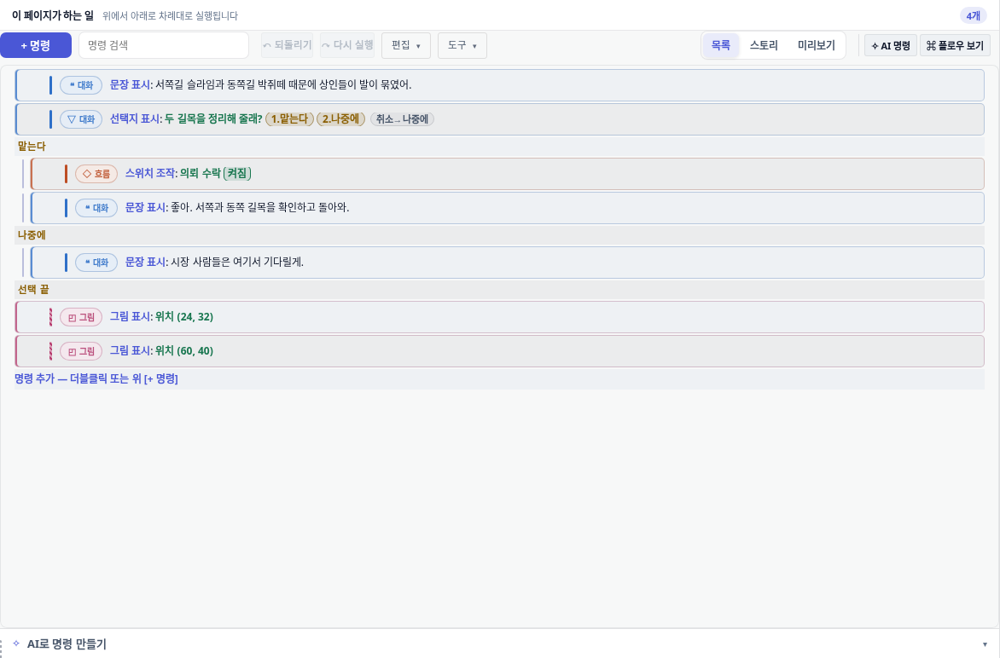
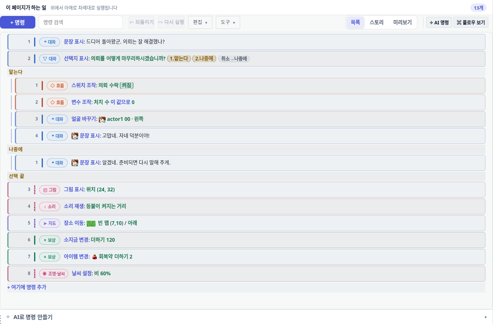
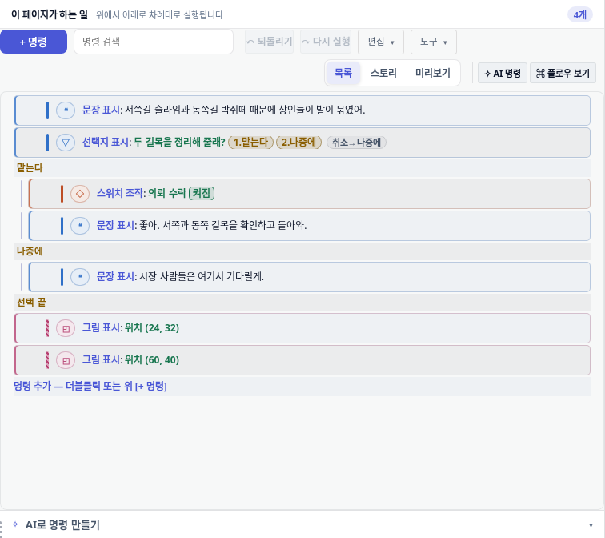
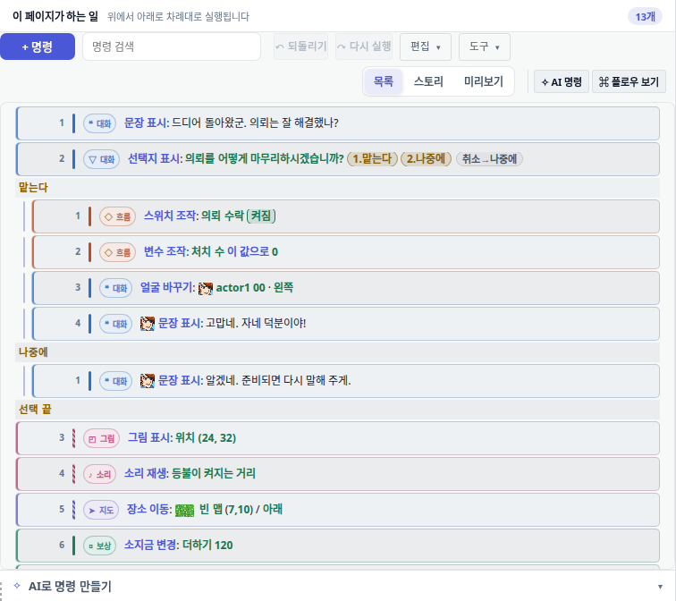
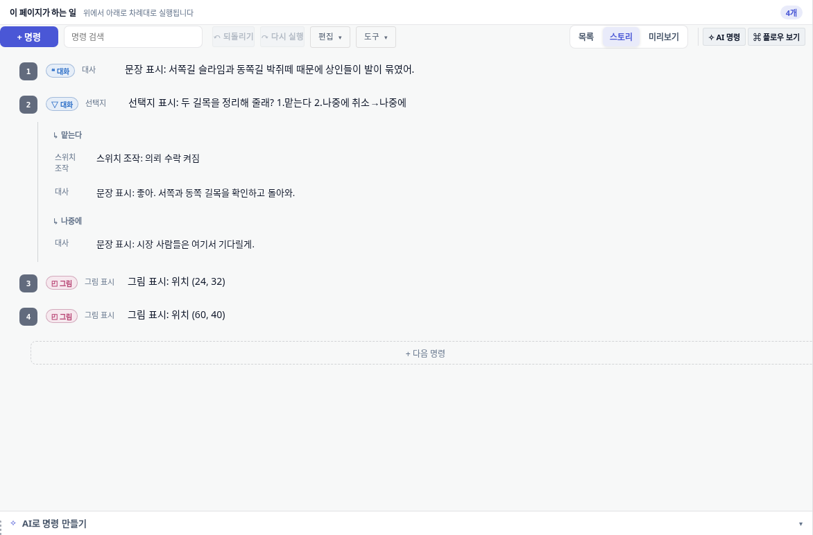
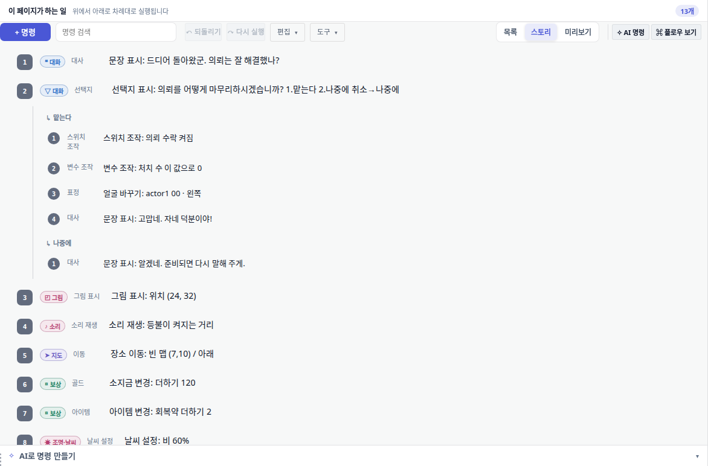
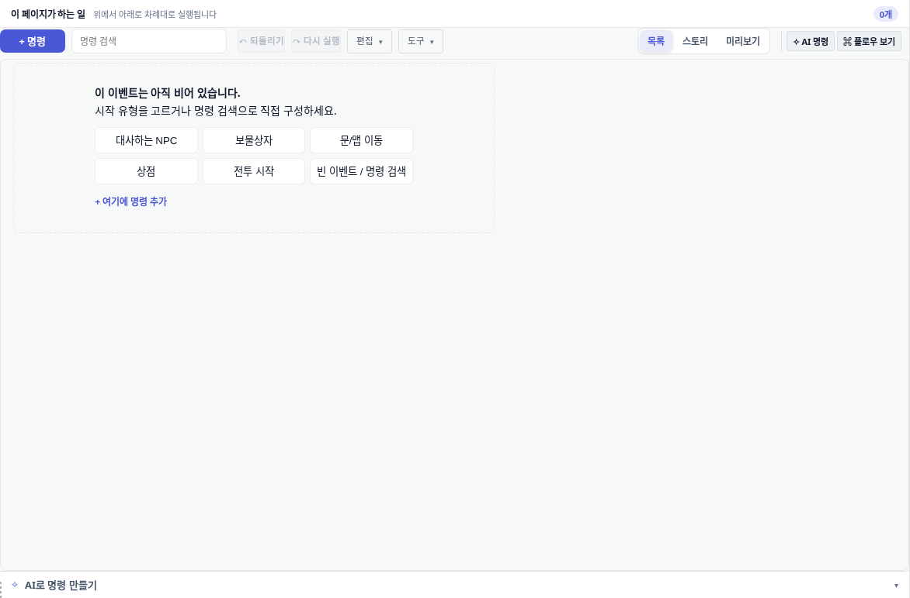
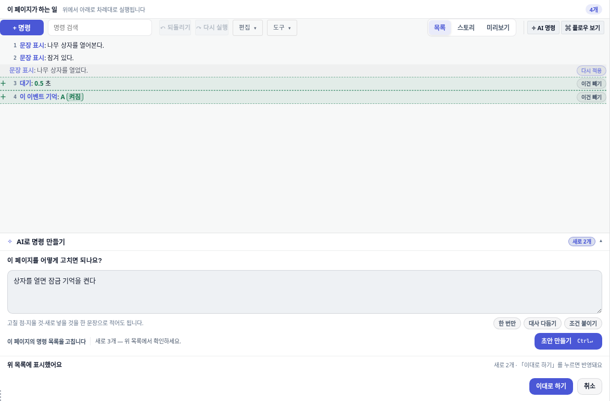
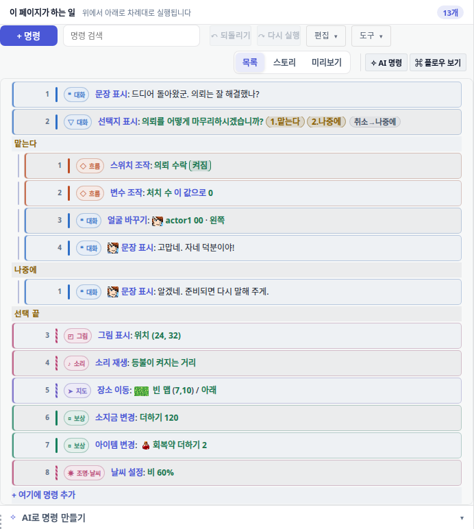
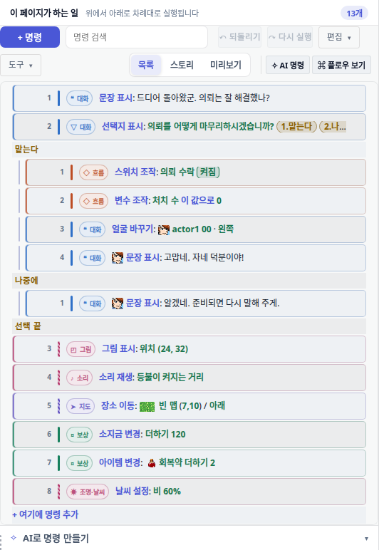

칼럼이 스스로 약속한 «위에서 아래로 차례대로 실행됩니다» 를 화면에 실제로 적게 만들었다.
한 줄 요약 — 목록이 자기가 약속한 것을 지키게 했다.
칼럼 제목 밑에는 «위에서 아래로 차례대로 실행됩니다» 라고 쓰여 있었지만, 순서를 적은 숫자가 화면에 하나도 없었다. 이제 모든 줄에 번호가 붙는다.
개수 배지가 거짓말을 했다. 눈에 13줄이 보이는데 «4개» 라고 적혀 있었다. 이제 보이는 것과 같은 수를 센다.
«명령 추가» 라고 적힌 줄이 한 번 눌러도 아무 일도 없었다. 이제 한 번 누르면 열린다.
창이 좁아지면 그 줄이 어떤 종류인지 알려주는 낱말이 사라졌다. 이제 좁아도 남는다.
적대적 검토 3라운드 · 지적 14건 을 전부 닫고 승인받아 병합했다.
1. 문제 — 라벨은 약속했지만 화면은 지키지 않았다
이 칼럼은 «이 페이지가 하는 일» 이라는 이름 아래 «위에서 아래로 차례대로 실행됩니다» 라고 적어 둔다. 그런데 그 순서를 알려주는 표시가 목록에 하나도 없었다. 더 이상한 건, 같은 칼럼의 «스토리» 보기에는 이미 동그란 번호가 붙어 있었다는 점이다. 두 보기가 서로 어긋난 채였다.
전 · 목록 보기 1440

번호가 없다. 오른쪽 위 배지는 «4개» 인데 화면에는 명령 줄이 그보다 많다. 맨 아래 «명령 추가 — 더블클릭 또는 위 [+ 명령]» 은 글씨처럼 보이고, 자기가 아닌 다른 버튼 이름을 부른다.후 · 목록 보기 1440

모든 줄에 실행 순서가 붙었다. 분기(«맡는다» / «나중에») 안에서는 1 부터 다시 세는데, 그 범위는 바로 위 분기 제목 줄이 말해 준다. 배지는 «13개» = 화면의 명령 줄 수와 정확히 같다.
전 · 좁은 창 1024

창이 좁아지자 «대화» «흐름» «그림» 이라는 낱말이 지워지고 작은 기호만 남았다. 그 줄이 무슨 일을 하는 종류인지 알려주는 유일한 표시가, 좁아서 더 필요한 순간에 사라진 것이다.후 · 좁은 창 1024

낱말이 그대로 남는다. 글자 크기와 여백만 줄였다. 실제로 재 보니 이 폭에서 글이 넘치지 않았고, 낱말을 지워서 아낀 26px 는 아무 값도 없었다.
왜 «4개» 가 문제였나
배지는 맨 바깥 명령만 셌다. 그런데 화면에는 분기(선택지) 안에 든 명령도 같이 보인다. 그래서 보는 사람이 세는 수와 배지가 달랐다. 사람은 화면에 보이는 것을 센다.
전 · 스토리 보기

여기엔 이미 ①②③④ 번호가 있었다. 즉 «번호를 붙인다» 는 생각은 원래 있었고, 목록 쪽만 빠져 있었다. 다만 분기 안 줄에는 번호가 없다.후 · 스토리 보기

검토에서 지적받아 분기 안 줄에도 같은 번호를 붙였다. 이제 두 보기가 같은 규칙을 쓴다.
빈 이벤트일 때

아직 아무것도 없을 때는 시작 꼴을 고르는 버튼들이 나온다. 맨 아래 «+ 여기에 명령 추가» 는 이제 한 번 누르면 열리는 진짜 버튼이다. 예전에는 버튼인 척하면서 두 번 눌러야만 반응했다.
2. 무엇을 고쳤나
고친 것
전에는
지금은
실행 순서 번호
순서를 적은 숫자가 목록에 하나도 없었다. 라벨만 «차례대로 실행됩니다» 라고 약속.
모든 줄에 번호. 분기 안에서는 1 부터 다시 시작하고, 그 범위는 위의 분기 제목 줄이 말한다.
개수 배지
맨 바깥 명령만 세서, 13줄 보이는 화면에 «4개».
분기 안 명령까지 세서 화면과 일치. 배지에 «분기 안 명령 포함» 이라고 설명도 붙였다.
추가 버튼
버튼인데 두 번 눌러야만 반응. 라벨이 자기가 아닌 다른 버튼 이름을 불렀다.
한 번 누르면 열린다. 라벨은 «+ 여기에 명령 추가».
빈 분기 줄
«여기에 명령 추가» 라고 적혀 있지만 눌러도 아무 일도 없는 장식이었다.
진짜 버튼. 누르면 그 분기 안으로 명령이 들어간다. 끌어다 놓아도 그 분기로 간다.
종류 낱말
창이 좁아지면 «대화» 같은 낱말이 지워지고 기호만 남았다.
좁아도 낱말이 남는다. 글자·여백만 줄인다. 스토리 보기도 같은 규칙.
AI 초안 번호
초안을 검토할 때 번호가 지워질 줄까지 세어 배지와 어긋났다.
«적용하면 남을 순서» 대로만 번호를 붙인다. 체크를 켜고 끌 때마다 다시 센다.
AI 초안에서 가장 까다로웠던 지점
AI가 명령을 고쳐 주겠다고 제안하면, 화면에는 «지울 것» 과 «넣을 것» 이 함께 보인다. 여기서 번호를 보이는 줄 순서대로 매기면 안 된다. 지워질 줄은 나중에 사라지니까, 그 줄이 번호를 하나 차지하면 남는 줄의 번호가 죄다 밀린다. 실제로 그래서 살아남는 명령 하나가 «2» 로 적히고 배지는 «1개» 라고 말하는 상태가 있었다.
지금은 «적용하고 나면 남을 것» 만 번호를 받는다. 여기서 뒤집히기 쉬운 게 하나 있는데, «지우자» 는 제안을 거절하면 그 명령은 남는다. 그래서 «지움» 줄은 거절했을 때만 번호를 받는다. 이 방향까지 검토에서 하나하나 확인했다.

체크를 껐다 켠 뒤에도 배지와 줄 번호가 같은 결과를 말한다. 이 화면을 브라우저에서 자동으로 찍어 증거로 남기고, 같은 내용을 테스트로 못 박았다.
3. 좁은 창에서도 괜찮은지 실제로 재 봤다
처음에는 1024 폭만 재고 «괜찮다» 고 적었는데, 검토에서 «이 저장소는 960 과 800 도 지키기로 해 놓았다» 는 지적을 받았다. 그래서 네 폭 모두 브라우저로 열어 줄마다 글이 넘치는지 를 직접 측정했다.
창 폭
보이는 명령 줄
배지
글 넘친 줄
번호가 매겨진 순서
1440
13
13개
0
1,2 · 1,2,3,4 · 1 · 3,…
1024
13
13개
0
1,2 · 1,2,3,4 · 1 · 3,…
960
13
13개
0
1,2 · 1,2,3,4 · 1 · 3,…
800
13
13개
0
1,2 · 1,2,3,4 · 1 · 3,…
후 · 960

낱말 유지, 넘침 없음.후 · 800

가장 좁은 800 에서도 넘치지 않는다. 그래서 추가로 손대지 않았다 — 재 본 결과가 깨끗한데 «혹시 몰라» 고치는 것은 근거 없는 변경이다.
4. 검토 과정 — 승인까지 3라운드
고친 사람과 검토한 사람을 일부러 분리했다. 검토자에게는 «찾아낸 것을 승인하지 말고 물고 늘어져라» 고 지시했다.
1라운드 — 지적 10건 · 승인 거부
스토리 보기 분기 줄에 번호 없음, 위키 설명이 코드와 다름, 빈 분기 줄이 죽어 있음, 얼굴 그림이 있는 줄의 칸 배치가 어긋남, 그리고 내가 만든 증거 자체가 잘못됐다는 지적 — 화면을 재는 코드가 존재하지 않는 이름을 찾고 있어서, 전·후 보고서가 똑같이 «줄 0개» 라고 적혀 있었다.
2라운드 — 치명 1건 · 승인 거부
AI 초안 번호가 아직 «지워질 줄» 까지 세고 있었다. 더 나쁜 건, 위키에 이미 고쳤다고 적어 놨다 는 점이었다. 코드에 없는 동작을 문서가 사실처럼 주장하고 있었다.
3라운드 — 승인
남은 것을 모두 확인. 다만 «문구를 한 곳으로 합치다가, 눌러도 아무 일 없는 자리에 여기에 명령 추가 라고 적히게 됐다» 는 지적이 새로 나왔다. 이건 이 작업이 없애려던 결함과 똑같은 종류라, 승인을 받은 뒤에도 병합 전에 고쳤다.
스스로 만든 결함을 승인 후에 고친 이유. 이 작업의 핵심은 «라벨이 자기가 못 하는 일을 약속하지 않게 하기» 였다. 그런데 문구를 하나로 합치는 과정에서, 읽기 전용 화면(누를 수 없는 자리)에 «여기에 명령 추가» 가 적히게 됐다. 검토자는 이걸 «막지는 않겠다» 고 했지만, 고치지 않고 내보내면 이 작업이 스스로를 부정하는 셈이다. 그래서 문구를 상태를 적는 말(«비어 있음») 과 누를 수 있는 버튼의 말(«비어 있음 — 여기에 명령 추가») 로 갈랐다.
5. 검증 결과
검토자나 작업자의 «통과했습니다» 라는 말은 근거로 쓰지 않았고, 아래는 전부 병합 직전 상태에서 직접 돌린 결과다.
검사
결과
내용
타입 검사 tsc
exit 0
오류 없음
단위·계약 테스트
131 passed
10개 파일. 아래 6건이 이번에 새로 못 박은 계약
CSS 예산
회귀 0건
새로 만든 문제 없음
화면 구조 게이트
8/9 축 통과
남은 1축은 이 작업과 무관한 기존 문제 (아래 설명)
브라우저 증거
27장
4개 폭 × 목록·스토리·빈 화면 + AI 초안
새로 못 박은 계약 6건
테스트가 지키는 것
이게 없으면
분기 안에서 번호가 1 부터 다시 시작한다
번호가 조용히 엉킨다
개수 배지가 분기 안 명령까지 센다
배지가 다시 화면과 어긋난다
AI 초안 번호와 배지가 같은 결과를 말한다
2라운드의 치명 결함이 되살아난다
체크를 끄면 번호가 빈틈 없이 다시 매겨진다
번호가 하나씩 밀린다
빈 분기에 끌어다 놓으면 그 분기로 들어간다
맨 바깥으로 잘못 들어간다
빈 분기 버튼이 그 분기 안으로 명령을 넣는다
버튼이 다시 장식이 된다
6. 솔직하게 남겨 둔 것
PR 이 두 개가 된 이유 — 첫 PR 은 검토 전에 자동으로 병합됐다.
PR #353 을 열자마자 저장소의 자동 통합 작업이 첫 커밋만 가져가 버렸다. 그래서 검토 3라운드에서 나온 수정 4건은 main 에 들어가지 않은 상태였다. 이걸 «승인 후 병합 완료» 라고 보고하면 거짓이 되므로, 최신 main 위에 다시 얹어 PR #376 으로 실제로 병합했다. 지금 main 에 검토된 내용이 모두 들어 있는지 항목별로 다시 확인했다.
이 작업이 고치지 않은 기존 문제 — 숨기지 않고 적는다. 남의 문제를 조용히 덮으면 다음 사람이 같은 함정에 빠진다.
화면 구조 게이트 1축 실패는 이 작업과 무관하다.main 의 상점 기능이 자기 기준선을 다시 뜨지 않고 들어와서 생긴 것이다. 이 작업은 상점 관련 파일을 하나도 건드리지 않았고, 해당 기준선 파일은 main 과 완전히 같다. 일부러 다시 뜨지 않았다 — 그러면 내가 검토하지도 않은 상점 화면을 조용히 승인하는 셈이 된다.
테스트 파일 하나에 타입 오류 2건이 있는데, main 자기 파일에 그대로 있는 기존 오류다.
브라우저 자동 검사 몇 개가 실패하는데, 존재하지 않는 화면 이름을 찾고 있는 검사 코드 자체의 문제다. 기준선에서도 똑같이 실패한다. 통과시키려고 검사를 무르게 고치는 짓은 하지 않았다.
도구 모음(위쪽 버튼 줄)은 일부러 손대지 않았다. 비슷한 모양의 메뉴 두 개가 붙어 있고 같은 화면으로 가는 문이 두 개라 어수선하지만, 저장소 문서에 그렇게 두기로 한 결정이 기록돼 있다. 남의 결정을 말없이 뒤집지 않았다. 정리를 원하시면 별도로 진행하겠다.
7. 결과물 위치
병합 완료 — PR #376, 병합 커밋 8cc46454. (첫 PR #353 은 첫 커밋만 담긴 채 자동 병합됨.)